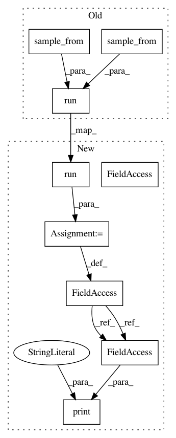

8b3f79f3079834f00c7ec62d5decd6bc026c1bc8,python/ray/tune/examples/pbt_ppo_example.py,,,#,18
Before Change
custom_explore_fn=explore)
ray.init()
run(
"PPO",
name="pbt_humanoid_test",
scheduler=pbt,
num_samples=8,
config={
"env": "Humanoid-v1",
"kl_coeff": 1.0,
"num_workers": 8,
"num_gpus": 1,
"model": {
"free_log_std": True
},
// These params are tuned from a fixed starting value.
"lambda": 0.95,
"clip_param": 0.2,
"lr": 1e-4,
// These params start off randomly drawn from a set.
"num_sgd_iter": sample_from(
lambda spec: random.choice([10, 20, 30])),
"sgd_minibatch_size": sample_from(
lambda spec: random.choice([128, 512, 2048])),
"train_batch_size": sample_from(
lambda spec: random.choice([10000, 20000, 40000]))
})
After Change
},
custom_explore_fn=explore)
analysis = tune.run(
"PPO",
name="pbt_humanoid_test",
scheduler=pbt,
num_samples=8,
metric="episode_reward_mean",
mode="max",
config={
"env": "Humanoid-v1",
"kl_coeff": 1.0,
"num_workers": 8,
"num_gpus": 1,
"model": {
"free_log_std": True
},
// These params are tuned from a fixed starting value.
"lambda": 0.95,
"clip_param": 0.2,
"lr": 1e-4,
// These params start off randomly drawn from a set.
"num_sgd_iter": tune.choice([10, 20, 30]),
"sgd_minibatch_size": tune.choice([128, 512, 2048]),
"train_batch_size": tune.choice([10000, 20000, 40000])
})
print("best hyperparameters: ", analysis.best_config)
In pattern: SUPERPATTERN
Frequency: 3
Non-data size: 9
Instances
Project Name: ray-project/ray
Commit Name: 8b3f79f3079834f00c7ec62d5decd6bc026c1bc8
Time: 2020-11-14
Author: rliaw@berkeley.edu
File Name: python/ray/tune/examples/pbt_ppo_example.py
Class Name:
Method Name:
Project Name: ray-project/ray
Commit Name: 8b3f79f3079834f00c7ec62d5decd6bc026c1bc8
Time: 2020-11-14
Author: rliaw@berkeley.edu
File Name: python/ray/tune/examples/tune_cifar10_gluon.py
Class Name:
Method Name:
Project Name: ray-project/ray
Commit Name: 8b3f79f3079834f00c7ec62d5decd6bc026c1bc8
Time: 2020-11-14
Author: rliaw@berkeley.edu
File Name: python/ray/tune/examples/pbt_ppo_example.py
Class Name:
Method Name:
Project Name: ray-project/ray
Commit Name: 8b3f79f3079834f00c7ec62d5decd6bc026c1bc8
Time: 2020-11-14
Author: rliaw@berkeley.edu
File Name: python/ray/tune/examples/tune_mnist_keras.py
Class Name:
Method Name: